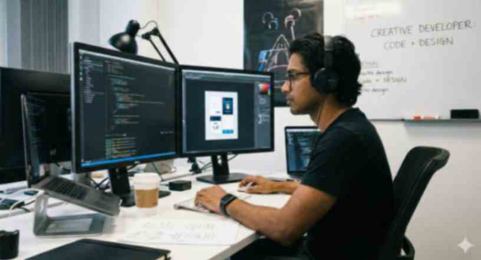

I am a creative and detail-oriented WordPress Developer and Graphic Designer with a strong passion for building modern, user-friendly digital experiences. With hands-on experience in theme customization, branding, and SEO, I specialize in transforming ideas into visually compelling websites and professional designs. Currently an Intern at Webbuilders.lk, I am dedicated to delivering high-quality results while continuously expanding my technical skills in the IT field.